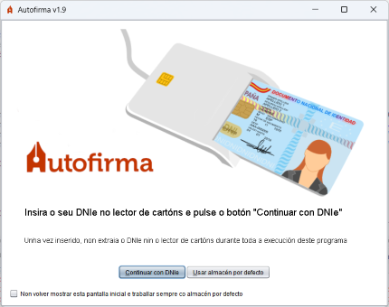

Esta pantalla só aparecerá se se detectou un lector de cartóns intelixentes instalado e configurado no sistema. Aquí o programa queda á espera de que o usuario insira o seu DNI electrónico no lector ou a que indique que non desexa utilizar o DNIe.

O usuario pode inserir o seu DNIe no lector e pulsar o botón "Continuar con DNIe" para avanzar asinar co seu certificado de sinatura do DNIe (non é necesario ter instalados os controladores do DNIe) ou pulsar o botón "Usar calquera certificado" ou a tecla Escape se desexa utilizar calquera certificado importado no seu sistema operativo.
Unha vez seleccionada unha opción, mostraráselle a pantalla de firma.